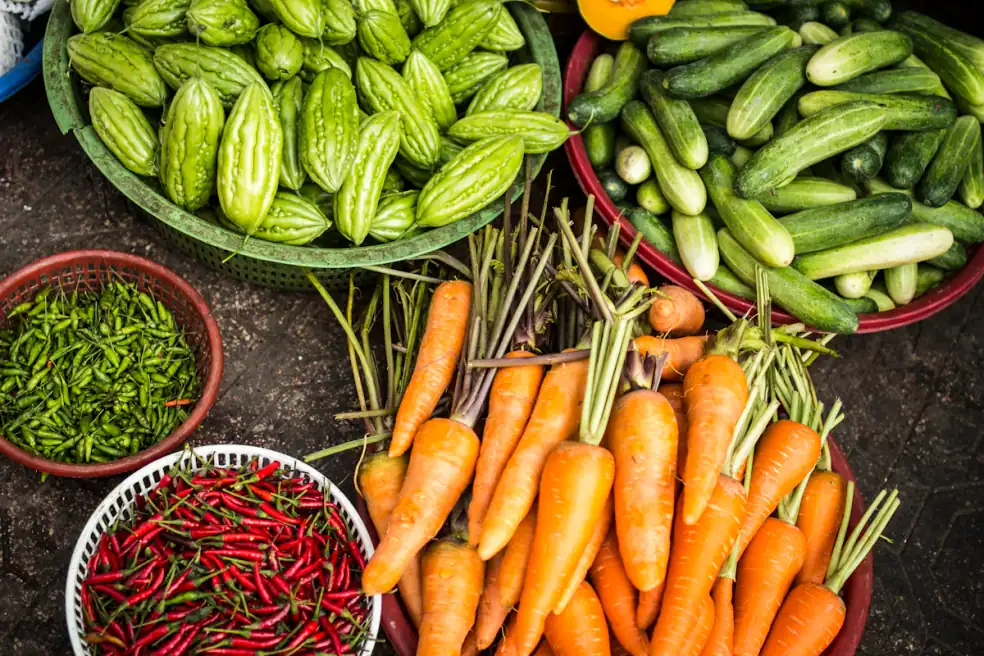

Daily action planning
Use demos to show how a grower can check priorities, update tasks, and avoid missed field work.

Demos
From live farm walkthroughs to smart irrigation previews, these demo experiences show how AgriNova helps growers work with confidence.

Demo library
See how smart farming tools support planting, irrigation, field visibility, and team coordination in real time.
Watch water planning adapt to weather, soil moisture, crop stage, and field priority for better efficiency.
Preview seasonal strategies that help teams prepare labour, packing, storage, and transport earlier.
Compare crop demand, dispatch timing, and produce readiness before deciding when to sell.
Understand soil status, nutrition gaps, moisture risk, and recommended improvement actions.
Preview field-level weather signals for spraying, irrigation, heat stress, and harvest windows.
Guided walkthrough
The demo journey begins with a real farming situation: low moisture in one field, a weather shift in the forecast, and a harvest decision coming later in the week.
Visitors can understand how dashboard data, task planning, service support, and market preparation connect without needing technical knowledge.
Interactive modules
Shows sowing, irrigation, nutrition, pest checks, pruning, and harvest tasks across the season.
Summarizes field condition, crop stage, soil moisture, action status, and next recommended step.
Compares fields by moisture, rainfall forecast, crop need, and pump schedule to avoid overuse.
Use cases
Use demos to show how a grower can check priorities, update tasks, and avoid missed field work.
Explain how multiple plots can be reviewed together for harvest timing, water planning, and buyer coordination.
Connect input recommendations with crop stage, soil needs, and farmer questions before purchase.
Demo outcomes
Visitors see field health, tasks, weather, water, and market planning as one connected workflow.
Demos make it easier to connect real farm problems with consultations, shop products, and support pages.
Clear steps help reduce confusion before irrigation, input application, harvest, and sales decisions.
Sign in to continue from the demo experience into field analytics, crop tasks, and farm planning tools.
Open dashboard demo